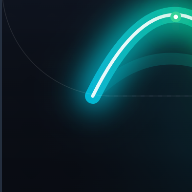

Política de Privacidade Local-FirstAplicativo: MYRVI — GLP-1 & Dose Tracker
Desenvolvedor: MayrinckTech
Última atualização: 01 de outubro de 2026
Contato: suporte@mayrincktech.com
O MYRVI não exige cadastro de e-mail, nome completo ou criação de senhas. Ao instalar o aplicativo, você começa a usá-lo imediatamente de forma anônima. Todas as doses, quadrantes corporais, histórico de peso e anotações são gravados localmente em banco de dados isolado no seu próprio aparelho.
Se você optar por assinar o MYRVI Pro, as transações financeiras serão processadas diretamente pela Apple (App Store) ou pelo Google Play. O MYRVI utiliza a infraestrutura do RevenueCat para validar recibos de forma anônima, sem coletar seu número de cartão de crédito ou dados bancários.
Nós não vendemos seus dados para terceiros e não utilizamos SDKs de rastreamento de anúncios (como Facebook Pixel, Google AdMob ou corretores de dados). O aplicativo não monitora suas atividades fora do ambiente do MYRVI.
O MYRVI agenda lembretes de dose e alertas de hábitos diretamente no sistema operacional do seu celular (notificações locais). Nenhum dado do seu ciclo é transmitido para servidores de notificação externa.
Como seus dados residem no seu dispositivo, você pode excluir qualquer registro diretamente pela tela Meus Registros ou apagar todo o banco de dados desinstalando o aplicativo do seu smartphone.
Dúvidas sobre nossa política de privacidade podem ser encaminhadas para suporte@mayrincktech.com.